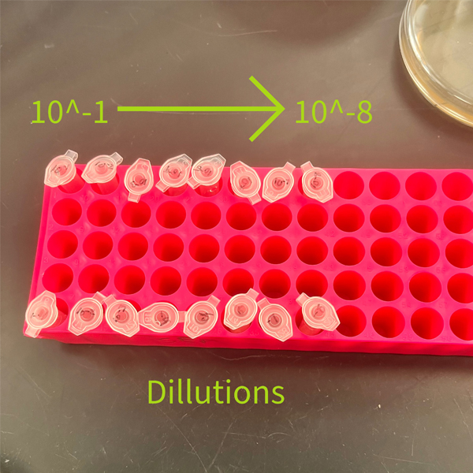
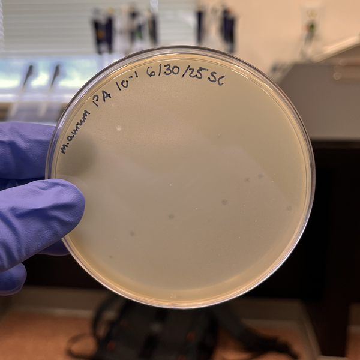

Purification
In a sample of phage buffer, there are thousands of different phages, but we only need one!
Picking A Plaque
Normally, there are tons of different plaques on the plaque assay due to how abundant they are.
We need to pick just one, and we will use that as our base line to isolate a single type of phage
Serial Dilutions
By deluding our sample of the picked plaque, we are able to lessen its concentration, and thus come closer to a single strand of phage.
This step is painstakingly tedious!

Microcentrifuge Tubes With Phage Particles and Buffer
Purified Sample
If everything goes correctly, we should be left with a plaque assay that looks something like this:

Plaque Assay Results
See how all the plaques look similar? That means we’ve successfully isolated a singular phage type.